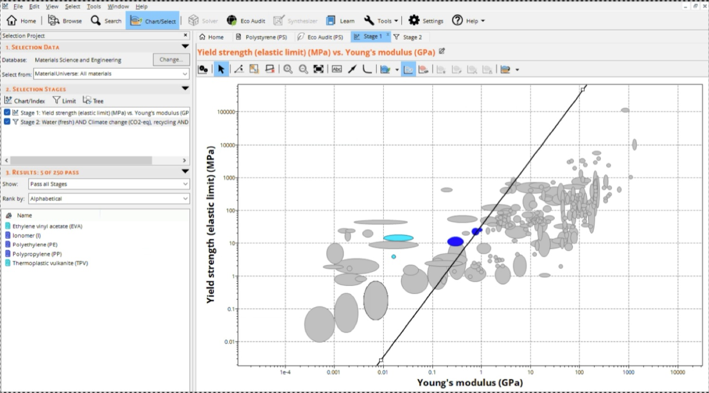
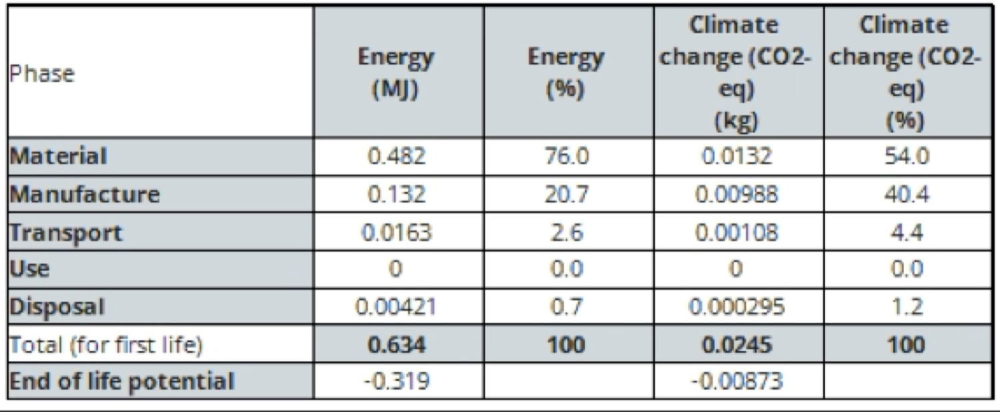

Choosing a material for nuclear wastewater filtration
A materials-selection project: comparing candidates in Granta EduPack, running the porosity and eco-audit numbers, and landing on polyethylene for a small town's water filter.
The brief
Water is a basic need, and plenty of communities depend on filtration because of the health and environmental risks in runoff from a nearby power plant. Our brief was to design a low-maintenance, well-regulated wastewater filtration system for a treatment plant serving a small town of ~1,000 people.
- The material had to be cost-effective, with a low environmental impact.
- It had to reduce nuclear and radioactive contaminants in the community's wastewater.
- It had to separate harmful impurities and contaminants from untreated water.
Why polyethylene
Our goal was a material suited to nuclear wastewater that was also cost efficient, low-impact, and low-risk. Polyethylene became our leading contender: one of the most cost-effective options with the lowest water usage, and able to withstand the high temperatures of nuclear wastewater while pulling out toxic impurities.
▶ The team's decision-making process rationale
Given the scenario's constraints (reducing nuclear waste by limiting radioactive contaminants, and staying effective while submerged), we concluded that strength and stiffness were the maximized performance indices most relevant to the design. A durable, long-lasting material means the filter doesn't need frequent replacement, which is exactly what a small community needs.
Performance indices
We framed material selection around two objectives (minimize cost and minimize carbon footprint), each expressed as a maximized performance index (MPI) for both stiffness and strength, and plotted the survivors on a Granta EduPack Ashby chart of yield strength vs. Young's modulus.

▶ Maximized performance index objectives data
| Objective | MPI (stiffness) | MPI (strength) | Justification | |
|---|---|---|---|---|
| Primary | Minimize cost | E1/3 / (ρ·Cm) | σy1/2 / (ρ·Cm) | The filter serves a small town of 1,000 and the council asked for it to be low-budget to build and operate. |
| Secondary | Minimize carbon footprint | E1/3 / (ρ·CO₂) | σy1/2 / (ρ·CO₂) | A main goal is relieving environmental and health hazards in the community. |
| Constraint 1 | Cost effective | N/A | N/A | Construction and maintenance carry a significant cost for a rural community. |
| Constraint 2 | Reduce nuclear contaminants | N/A | N/A | The design must reduce and limit radioactive contaminants in the water supply. |
Porosity math
We decided porosity was a key factor in material selection for this scenario, because it governs both a material's strength and its permeability. Using the formula:
I used it to solve for the number of pores needed to reach 30% porosity in polyethylene, which came out to 1.52 × 1011 pores [6].
The eco-audit
Running polyethylene through Granta EduPack's Eco-Audit gave us the energy and CO₂ breakdown across its life cycle. The material phase dominates: over three-quarters of the embodied energy is in the polymer itself, which is exactly where recycling pays off.
The Eco-Audit results made polyethylene's case:
- Least carbon of the candidates: 0.0245 kg CO₂.
- ~0.634 MJ of energy, less than polystyrene's 0.685 MJ.
- Transport energy was efficient at 0.0163 MJ [2].
▶ Full Eco-Audit & end-of-life table data
| Phase | Energy (MJ) | Energy (%) | CO₂ (kg) | CO₂ (%) |
|---|---|---|---|---|
| Material | 0.482 | 76.0 | 0.0132 | 54.0 |
| Manufacture | 0.132 | 20.7 | 0.00988 | 40.4 |
| Transport | 0.0163 | 2.6 | 0.00108 | 4.4 |
| Use | 0 | 0.0 | 0 | 0.0 |
| Disposal | 0.00421 | 0.7 | 0.000295 | 1.2 |
| Total (first life) | 0.634 | 100 | 0.0245 | 100 |
| End-of-life potential | −0.319 | −0.00873 |

Collaborating with my team
Over the project my team and I developed a strong grip on material selection and the Granta EduPack workflow. As the manager I kept the timelines on track, made sure everyone stayed on task, and ran weekly meetings to work through the material decision and fold in feedback for the final presentation.
My contributions
I delegated responsibilities against set deadlines and kept the decision-making tight, while owning the material research, the MPI and porosity calculations, and the eco-audit interpretation. Roughly how it broke down:
▶ Personal logbook: recorded notes timeline
| Date | Notes & responsibilities |
|---|---|
| Mon Jan 6 | Confirmed team milestones 0 & 1 were submitted and responsibilities fulfilled, via the team chat. |
| Mon Jan 13 | Reminded the admin to submit milestone 2; made sure each member completed their part of the regulations discussion, morph chart, metrics, and sustainable practices. |
| Mon Jan 20 | Confirmed milestone 3 was submitted; kept the group chat updated and milestones on time. |
| Mon Jan 27 | Reminded the admin to submit milestone 4; conducted material research and MPI calculations. |
| Tue Jan 28 | Led a discussion on material rankings; evaluated the top candidate from individual property charts; ran porosity calculations for the chosen material. |
| Feb 3 | Led a decision-making meeting on the Eco-Audit implications: energy, cost, and CO₂ footprint. |
| Feb 12–13 | Ran a meeting to practice the presentation and adjust the material analysis. |
Reflection & feedback
▶ Final reflection learning
This project was an important learning opportunity for where I want to go in engineering. I got to learn the moving parts of material selection and how to run calculations that maximize a material's performance. It pushed me out of my comfort zone and taught me to turn research and collected data into real designs, like a nuclear wastewater filtration system.
▶ Summary takeaway
Continuing to research and refine my designs will keep paying off: it improves quality and sharpens my ability to spot specific issues early in testing. I'll keep overcoming those challenges by strengthening my problem-solving, staying current on research, tracking deadlines, and filtering feedback into the final iteration of a design.
▶ What my teammate said peer feedback
“Erika demonstrated great leadership throughout the project. She had a clear vision for the entire model and ensured the team stayed aligned with her ideas. Her ability to coordinate with everyone, provide guidance, and maintain open communication made her a great team leader. Erika consistently met deadlines, never missed submitting teamwork, and ensured all tasks were completed on time. Her involvement played a huge role in keeping the entire team focused and productive.”
Project 2 teammate
References
- J. Marshes, “Bubbles going upwards on a body of water,” Unsplash. Accessed Jan. 19, 2024.
- Ansys Inc., Granta EduPack 2024 [software]. Cambridge, UK: Ansys Granta, 2024. Accessed Apr. 8, 2025.
- K. Naoum, “All About Polyethylene (PE),” Xometry. Accessed Apr. 8, 2025.
- “HDPE (High-Density Polyethylene),” recycledplastic.com. Accessed Apr. 8, 2025.
- “Ceramic Membrane Applications,” Aquaneel Separation. Accessed Apr. 8, 2025.
- “Measurement of filter porosity using a custom-made rig.” Accessed Feb. 15, 2025.
- “Importance of Recycling in Sustainable Development Goals,” Evreka. Accessed Apr. 8, 2025.
Design Project 2 · ENG 1P13 Integrated Cornerstone Design, McMaster University · Winter 2025.